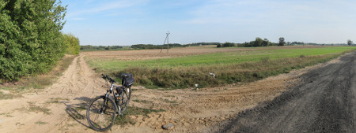
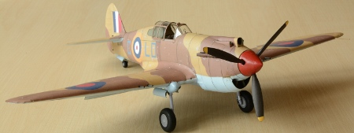
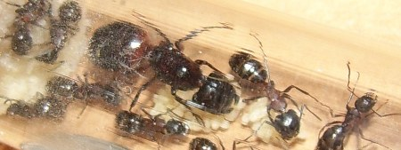

Personal
Computer science is what I do for the most of my time, but it is not the only thing that occupies my time and thoughts. Below is a short list of my other activities, interests and hobbies.
Retro gaming

I am interested in the history of gaming. I enjoy playing retro games, both on original hardware and using emulators. I have a Sega Dreamcast, Nintendo GameCube, Nintendo Wii U, and a humble collection of handhelds, including several modded GameBoys and two PSVitas.
Mountain trekking

I enjoy mountain trekking, especially multi-day trips to remote areas devoid of people. I have been to various ranges of Carpathians in Poland, Slovakia, Ukraine and Romania. Nowadays I trek in the Scottish Highlands.
Biking

When not in the mountains, I enjoy biking in rural areas.
History and wargaming

I see history as an important mean to understand modern world. I am especially interested in the period of Second World War. Antony Beevor is one of my favourite authors. I also like to play wargames, i.e. strategy board games that aim at recreating historical conflicts to allow their better understanding and provide entertainment at the same time.
Paper models and aviation

I usually spend autumn and winter evenings making paper models, a hobby my father introduced me to when I was a kid. I have a keen interest in aviation so most of my models are fighter airplanes from the World War II.
Evolutionary biology

Since I am a computer scientist it might come as a surprise that works that influenced me the most as a researcher were those by biologists: Richard Dawkins, Charles Darwin and Edward O. Wilson. One field of biology that I am particularly fond of is myrmecology, ie. research of ants. I even used to have several ant colonies at home! I am also interested in philosophical work that aims to explain phenomena of consciousness and morality through mechanisms of evolution.